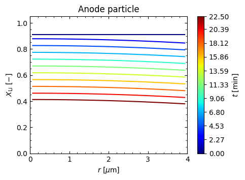
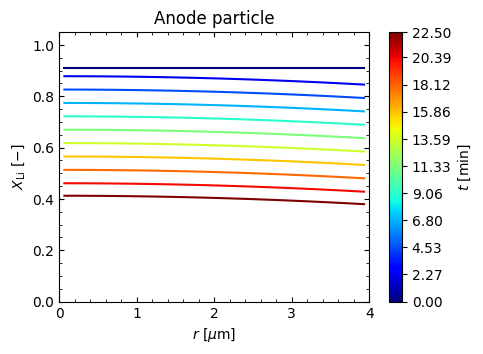

2. Constant Current#
This notebook will teach you how to run a constant current experiment with the SPM simulation class. We start by importing the bmlite package and instantiating an instance of the SPM.Simulation class, as shown below. Note that by not passing a .yaml file as an input, we get a warning that the instance is built from the default file.
1import bmlite as bm
2
3sim = bm.SPM.Simulation()
[BatMods WARNING] SPM Simulation: Using a default yaml
After the simulation has finished initializing, you are ready to run any of the available experiments. All of the experiments are accessed from “run” methods. For example, to run a constant current eperiment, we will call sim.run_CC(). All of the run methods take an experimental details dictionary (exp) as their input. The details are specific to the experiment being performed. To access a list of the required keys for exp you can run the help() command on the method, as shown below. An optional kwargs argument is also available, which can be used to set a variety of solver options.
1help(sim.run_CC)
Help on method run_CC in module bmlite.SPM:
run_CC(exp: dict, **kwargs) -> object method of bmlite.SPM.Simulation instance
Runs a constant current experiment specified by the details given in
the experiment dictionary ``exp``.
Parameters
----------
exp : dict
The constant current experimental details. Required keys and
descriptions are listed below:
=========== ==============================================
Key Value [units] (type)
=========== ==============================================
C_rate C-rate (+ charge, - discharge) [1/h] (*float*)
t_min minimum time [s] (*float*)
t_max maximum time [s] (*float*)
Nt number of time discretizations [-] (*int*)
=========== ==============================================
**kwargs : dict, optional
The keyword arguments specify the Sundials IDA solver options. A
partial list of options/defaults is given below:
=============== =================================================
Key Description (type or options, default)
=============== =================================================
rtol relative tolerance (*float*, 1e-6)
atol absolute tolerance (*float*, 1e-9)
linsolver linear solver (``{'dense', 'band'}``, ``'band'``)
lband width of the lower band (*int*, ``self.lband``)
uband width of the upper band (*int*, ``self.uband``)
max_step_size maximum time step (*float*, 0. -> unrestricted)
rootfn root/event function (*Callable*, ``None``)
nr_rootfns number of events in ``'rootfn'`` (*int*, 0)
=============== =================================================
Returns
-------
sol : CCSolution object
Solution class with the returned variable values, messages, exit
flags, etc. from the IDA solver. The returned ``CCSolution``
instance includes post processing, plotting, and saving methods.
See also
--------
bmlite.IDASolver
bmlite.SPM.solutions.CCSolution
Refering to the help() output above, we construct an exp dictionary below for a 2C discharge experiment. We will run the experiment from a starting time of t = 0 seconds and stop at t = 1350 seconds, saving the state variables in the solution for Nt = 150 equally spaced time steps between 0 and 1350 seconds. The run_CC() outputs a solution class (named sol below).
Note that we could also call bm.SPM.templates(exp='constant_current') to get a template for exp. This may be faster and/or more convenient for some users. For more information, please review the tutorial on Making Inputs.
1exp = {'C_rate': -2,
2 't_min': 0.,
3 't_max': 1350.,
4 'Nt': 150
5 }
6
7sol = sim.run_CC(exp)
8
9sol.plot('general')
 


The sol object returned by run_CC() contains methods to post-process, plot, and save results. Calling sol.post() will run a post-processing routine that fills the postvars attribute with a dictionary of residuals, fluxes, etc. In addition, the plot() method can be used to visualize some of the results, as shown above. You can use help(sol.plot) to get more information on which plotting arguments are available based on the specific experiment/solution.
To save results, use the code below:
sol.slice_and_save('2C_discharge')
this saves a file called 2C_discharge.npz to your current working directory. You can also save to another directory by passing the absolute or relative path to the desired save location. For example, sol.slice_and_save('../2C_discharge'). To get more information on the saved variables, use help(sol.slice_and_save).